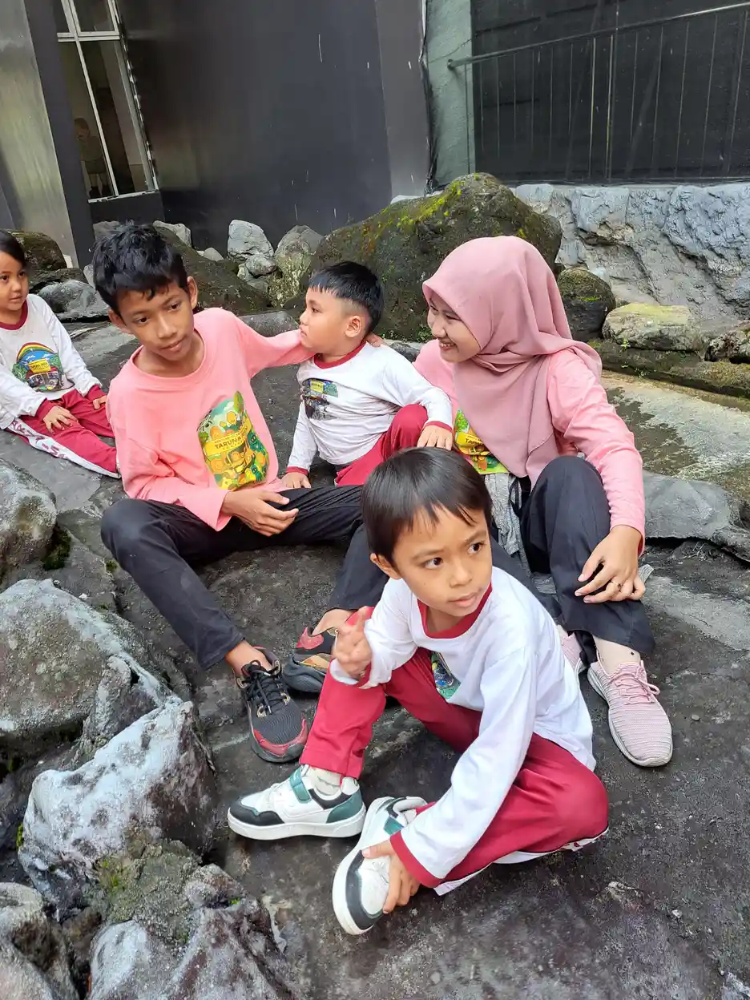
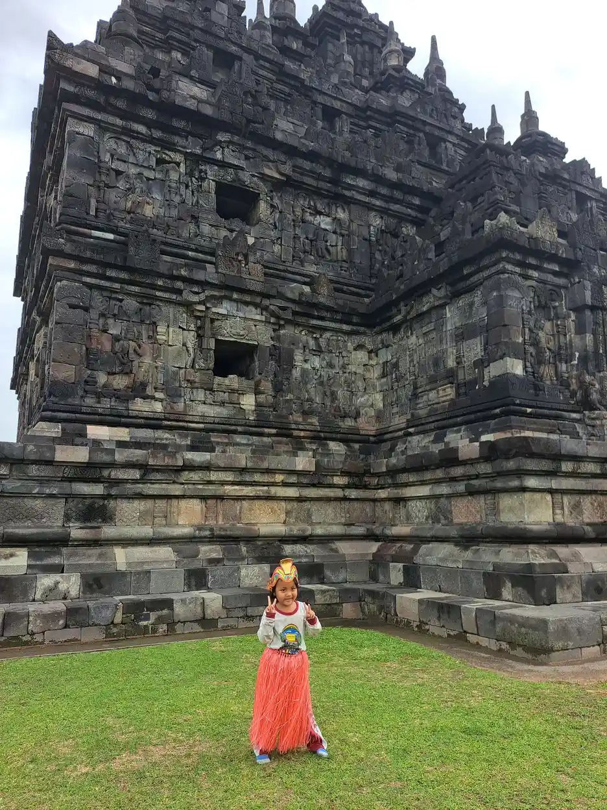

Contoh motorik kasar adalah semua gerakan yang melibatkan otot-otot besar tubuh: berguling, merangkak, berjalan, berlari, melompat, memanjat, menendang, dan melempar. Kemampuan ini menjadi fondasi kemandirian anak, mulai dari bermain bersama teman sampai duduk tegak saat belajar. Artikel ini berisi kumpulan aktivitas praktis yang bisa langsung Anda praktikkan di rumah, disusun per kelompok usia, plus cara mengadaptasinya untuk anak berkebutuhan khusus.
Jika Anda mencari penjelasan teori, tahapan perkembangan, dan tanda gangguan motorik kasar, kami sudah membahasnya lengkap di artikel motorik kasar: pengertian, tahapan, dan stimulasi. Anggap artikel tersebut sebagai buku teorinya, dan artikel yang sedang Anda baca ini sebagai buku resepnya: langsung ke daftar kegiatan.
Sebagai patokan umum, pedoman aktivitas fisik WHO menganjurkan anak usia 3 sampai 4 tahun aktif bergerak minimal 180 menit sepanjang hari, dan anak usia 5 sampai 17 tahun melakukan aktivitas fisik sedang sampai berat rata-rata 60 menit per hari. Daftar di bawah ini akan membantu Anda mengisi menit-menit itu dengan kegiatan yang bermakna.
Daftar Isi
- Apa Saja yang Termasuk Motorik Kasar?
- Contoh Aktivitas Usia 0 sampai 12 Bulan
- Contoh Aktivitas Usia 1 sampai 2 Tahun
- Contoh Aktivitas Usia 2 sampai 3 Tahun
- Contoh Aktivitas Usia 3 sampai 4 Tahun
- Contoh Aktivitas Usia 4 sampai 6 Tahun
- Adaptasi Aktivitas untuk Anak Berkebutuhan Khusus
- Tanda Anak Membutuhkan Stimulasi Tambahan
- FAQ Seputar Contoh Motorik Kasar
Apa Saja yang Termasuk Motorik Kasar?
Motorik kasar mencakup tiga kelompok besar keterampilan. Pertama, keterampilan lokomotor: gerakan berpindah tempat seperti merangkak, berjalan, berlari, melompat, meloncat dengan satu kaki, dan memanjat. Kedua, keterampilan nonlokomotor: gerakan di tempat seperti membungkuk, memutar badan, berjongkok, dan menjaga keseimbangan berdiri satu kaki. Ketiga, keterampilan manipulatif: mengendalikan objek dengan tenaga besar seperti melempar, menangkap, menendang, dan memukul bola.
Ketiganya berbeda dari motorik halus yang melibatkan otot-otot kecil jari dan tangan untuk kegiatan seperti menulis dan meronce; perbedaannya kami jelaskan di artikel motorik halus: tahapan dan cara stimulasinya. Keduanya saling menopang: anak yang otot inti tubuhnya kuat karena banyak bergerak akan lebih stabil duduknya, dan duduk yang stabil adalah syarat tangan bekerja dengan baik.
Prinsip memilih aktivitas sederhana saja: ikuti usia dan kemampuan anak saat ini, beri tantangan sedikit di atasnya, dan bungkus dalam permainan. Anak belajar gerak paling cepat ketika ia tidak sadar sedang berlatih.
Inti Singkat
Contoh motorik kasar meliputi gerakan berpindah tempat (merangkak, berjalan, berlari, melompat, memanjat), gerakan di tempat (membungkuk, berputar, keseimbangan), dan pengendalian objek (melempar, menangkap, menendang). Stimulasinya cukup lewat permainan harian yang disesuaikan usia, tanpa alat mahal.
Contoh Aktivitas Usia 0 sampai 12 Bulan
Di tahun pertama, stimulasi terbaik justru yang paling sederhana. Pertama, tummy time atau tengkurap terjaga: mulai 1 sampai 2 menit beberapa kali sehari sejak bayi baru lahir, sambil diajak bicara dari depan agar ia mengangkat kepala. Kedua, meraih mainan: letakkan mainan sedikit di luar jangkauan saat bayi tengkurap untuk memancing gerakan berguling dan merayap. Ketiga, bermain berguling: bantu bayi berguling ke kedua arah di alas yang empuk.
Keempat, duduk dengan sangga: dudukkan bayi di pangkuan atau dengan bantal penyangga, lalu kurangi bantuan seiring ototnya menguat. Kelima, merangkak mengejar: setelah bayi mulai merangkak, jadikan Anda atau bola sebagai target yang bergerak pelan. Keenam, berdiri berpegangan: sediakan meja rendah yang stabil untuk bayi belajar menarik badan ke posisi berdiri dan merambat.
Hindari terlalu lama menaruh bayi di kursi, gendongan, atau alat duduk lain saat ia bangun; lantai yang aman adalah gym terbaik bayi. Satu catatan penting: rentang normal perkembangan itu lebar, misalnya ada bayi yang berjalan di 10 bulan dan ada yang di 15 bulan. Namun bila bayi tampak sangat lemas, sangat kaku, atau jauh tertinggal dari patokan umum, periksakan lebih awal seperti kami bahas di artikel intervensi dini anak berkebutuhan khusus.
Contoh Aktivitas Usia 1 sampai 2 Tahun
Usia berjalan adalah usia menjelajah. Pertama, berjalan di berbagai permukaan: rumput, pasir, matras, jalan sedikit menanjak; setiap permukaan melatih keseimbangan secara berbeda. Kedua, mendorong dan menarik: mainan dorong, kardus berisi boneka, atau keranjang cucian ringan melatih kekuatan kaki dan koordinasi. Ketiga, naik turun tangga dengan pegangan dan pengawasan penuh, dimulai dengan merangkak naik.
Keempat, menendang dan melempar bola besar: bola plastik ringan seukuran bola voli paling pas untuk tangan dan kaki kecil. Kelima, berjoget mengikuti musik: lagu anak dengan gerakan sederhana melatih koordinasi seluruh tubuh sekaligus menyenangkan. Keenam, memanjat sofa atau bantal besar yang aman: susun bantal menjadi gunung kecil untuk dipanjat dan digulingi.
Pada usia ini fokusnya adalah kesempatan, bukan kesempurnaan gerakan. Sediakan waktu bermain bebas yang cukup setiap hari, batasi waktu duduk di depan layar, dan biarkan anak jatuh bangun di lingkungan yang aman; jatuh yang aman adalah bagian dari kurikulum belajar keseimbangan.
Contoh Aktivitas Usia 2 sampai 3 Tahun
Pertama, melompat dengan dua kaki: mulai dari melompat di tempat, lalu melompati garis dari lakban di lantai, lalu turun dari undakan rendah. Kedua, berjalan di garis lurus: tempel lakban memanjang di lantai dan minta anak berjalan mengikutinya seperti meniti jembatan. Ketiga, berlari dan berhenti: mainkan lampu merah lampu hijau versi sederhana untuk melatih kontrol gerak.
Keempat, menangkap bola besar dari jarak dekat dengan kedua tangan. Kelima, mengayuh sepeda roda tiga atau mainan yang didorong kaki. Keenam, menirukan gerak binatang: melompat seperti katak, berjalan seperti kepiting, merangkak seperti beruang; permainan ini melatih kekuatan lengan, inti tubuh, dan koordinasi dengan cara yang membuat anak tertawa.
Di usia ini Anda juga bisa mulai membuat jalur rintangan mini di rumah: kolong meja untuk dilewati merangkak, bantal untuk dilompati, kursi untuk diputari. Ubah susunannya tiap beberapa hari agar tetap menantang. Aktivitas rumahan seperti membantu membawa cucian ke keranjang juga diam-diam melatih kekuatan dan keseimbangan.
Contoh Aktivitas Usia 3 sampai 4 Tahun

Pertama, berdiri dan melompat dengan satu kaki: mulai dari berdiri satu kaki sambil berpegangan, lalu tanpa pegangan, lalu engklek sederhana. Kedua, melempar ke sasaran: lempar bola kaus kaki ke keranjang cucian dari jarak yang makin jauh. Ketiga, menaiki tangga dengan kaki bergantian tanpa pegangan, dengan pengawasan.
Keempat, bersepeda roda tiga dengan lancar atau mulai mencoba balance bike (sepeda tanpa pedal) untuk melatih keseimbangan. Kelima, senam sederhana: berguling depan di matras dengan bantuan, sikap pesawat terbang, dan meniru gerakan senam anak dari video bersama orang tua. Keenam, bermain kejar-kejaran dengan aturan sederhana seperti menyentuh pohon sebagai tempat aman.
Sesuai anjuran WHO untuk usia ini, targetkan total aktivitas fisik minimal 180 menit sepanjang hari dengan setidaknya 60 menit yang cukup membuat anak terengah senang. Tidak harus sekaligus; cicil sepanjang pagi, sore, dan waktu bermain bebas.
Contoh Aktivitas Usia 4 sampai 6 Tahun
Pertama, lompat tali rendah: mulai dengan tali diam yang dilompati bolak-balik, lalu tali yang digoyang pelan. Kedua, menangkap bola kecil: turunkan ukuran bola secara bertahap dari bola voli ke bola tenis. Ketiga, menendang bola ke gawang kecil dengan ancang-ancang berlari. Keempat, berenang atau bermain air terarah dengan pengawasan; air adalah tempat latihan seluruh otot yang minim risiko benturan.
Kelima, permainan tradisional: engklek, lompat karet, gobak sodor, dan ular naga adalah paket lengkap latihan lokomotor, keseimbangan, dan strategi sosial warisan budaya kita. Keenam, jalur rintangan yang dirancang anak sendiri: biarkan ia menyusun rintangannya, karena merancang urutan gerak juga melatih perencanaan motorik. Ketujuh, membantu pekerjaan rumah yang "berat": menyiram tanaman dengan ember kecil, menyapu halaman, membawa belanjaan ringan.
Di usia pra sekolah dasar ini, kesiapan motorik berhubungan langsung dengan kesiapan belajar: anak yang mampu duduk tegak lama, menjaga keseimbangan, dan mengatur tenaganya akan lebih siap mengikuti kelas. Jika Anda menyiapkan anak masuk SD, jadikan daftar di atas menu harian selain latihan calistung.
Adaptasi Aktivitas untuk Anak Berkebutuhan Khusus

Prinsip adaptasi pertama adalah memecah gerakan menjadi langkah kecil. Untuk anak yang kesulitan melompat, urutannya bisa: berjongkok lalu berdiri cepat, lalu melompat sambil dipegangi kedua tangan, lalu melompat memegang satu tangan, baru melompat mandiri. Setiap langkah dirayakan sebagai keberhasilan. Prinsip kedua adalah menyederhanakan aturan dan memberi contoh visual: peragakan dulu, gunakan gambar urutan gerakan, dan beri instruksi satu per satu.
Prinsip ketiga adalah menyesuaikan alat: bola yang lebih besar dan ringan, sasaran yang lebih dekat, tali yang lebih rendah, atau permukaan yang lebih stabil. Untuk anak dengan hambatan keseimbangan, mulai semua aktivitas dari posisi duduk atau berpegangan. Untuk anak yang mudah kewalahan dengan suara dan keramaian, pilih waktu bermain yang tenang dan beri jeda istirahat teratur; kaitan antara pengolahan sensorik dan gerak kami bahas di artikel sensori integrasi pada anak.
Jika anak memiliki hambatan gerak yang nyata, susun program bersama profesional. Fisioterapis dan terapis okupasi dapat merancang latihan yang aman sesuai kondisi anak; peran keduanya kami jelaskan di artikel terapi fisik untuk ABK dan terapi okupasi. Untuk keluarga di Yogyakarta, layanan terapi okupasi di Sleman yang dikelola YUKA dapat menjadi titik mulai untuk asesmen dan program stimulasi motorik anak.
Tanda Anak Membutuhkan Stimulasi Tambahan
Waspadai bila anak tertinggal jauh dari patokan usianya, misalnya belum berjalan di usia 18 bulan, belum bisa melompat dengan dua kaki di usia 3 tahun, atau belum bisa naik tangga kaki bergantian di usia 4 tahun. Perhatikan juga kualitas geraknya: sering jatuh melebihi kewajaran, tampak sangat kaku atau sangat lemas, menyeret satu sisi tubuh, atau selalu menghindari aktivitas fisik yang disukai anak sebayanya.
Langkah pertama bukan panik, melainkan memperkaya kesempatan gerak selama beberapa minggu sambil mengamati: kurangi waktu layar dan waktu duduk di kereta dorong, perbanyak bermain lantai dan luar ruangan, lalu catat perkembangannya. Bila tidak ada kemajuan berarti, konsultasikan ke dokter anak atau fisioterapis anak untuk asesmen. Datang lebih awal selalu lebih baik: otot dan otak anak usia dini sangat responsif terhadap latihan yang tepat.
Halaman Rumah Lebih Berharga dari Mainan Mahal
Semua aktivitas dalam daftar ini bisa dilakukan dengan barang yang sudah ada di rumah: bantal, lakban, bola plastik, keranjang cucian, dan halaman atau gang yang aman. Yang paling dibutuhkan anak bukan alat, melainkan waktu, teman bermain, dan orang dewasa yang ikut turun bermain bersamanya.
FAQ Seputar Contoh Motorik Kasar
1. Apa saja contoh motorik kasar?
Contohnya berguling, merangkak, berjalan, berlari, melompat, memanjat, berjongkok, menjaga keseimbangan satu kaki, serta melempar, menangkap, dan menendang bola. Intinya semua gerakan yang menggunakan otot-otot besar tubuh.
2. Apa contoh aktivitas motorik kasar untuk bayi?
Tummy time atau tengkurap terjaga, meraih mainan saat tengkurap, berguling, duduk dengan sangga, merangkak mengejar bola, dan berdiri berpegangan pada meja rendah yang stabil. Lantai yang aman adalah tempat latihan terbaik bayi.
3. Apa contoh motorik kasar anak usia 5 tahun?
Lompat tali rendah, engklek, menangkap bola kecil, menendang bola dengan ancang-ancang, berenang, bersepeda, senam sederhana seperti berguling depan, serta permainan tradisional seperti gobak sodor dan lompat karet.
4. Apa bedanya motorik kasar dan motorik halus?
Motorik kasar memakai otot besar untuk gerakan seperti berlari dan melompat, sedangkan motorik halus memakai otot kecil jari dan tangan untuk kegiatan seperti menulis, menggunting, dan meronce. Keduanya saling menopang dan sama pentingnya.
5. Berapa lama anak perlu aktivitas fisik setiap hari?
Pedoman WHO menganjurkan anak usia 3 sampai 4 tahun aktif minimal 180 menit sepanjang hari dengan 60 menit di antaranya cukup intens, dan anak usia 5 sampai 17 tahun melakukan aktivitas fisik sedang sampai berat rata-rata 60 menit per hari.
6. Bagaimana melatih motorik kasar anak berkebutuhan khusus?
Pecah gerakan menjadi langkah kecil, beri contoh visual dan instruksi satu per satu, sesuaikan alat seperti bola lebih besar atau sasaran lebih dekat, dan rayakan tiap kemajuan. Untuk hambatan gerak yang nyata, susun program bersama fisioterapis atau terapis okupasi.
Baca Juga Artikel Terkait:
Sumber Resmi & Referensi Authoritative
Konten artikel ini diperkuat dengan referensi dari lembaga resmi pemerintah dan organisasi authoritative:
- WHO Fact Sheet: Physical Activity who.int
- Kemenkes Yankes: Sensori Integrasi pada Perkembangan Anak keslan.kemkes.go.id
- Kemenkes Ayo Sehat: Kumpulan Link Penting untuk Anak Disabilitas ayosehat.kemkes.go.id
Disclaimer Medis & Pendidikan: Artikel ini bersifat edukasi umum dan bukan pengganti konsultasi profesional. Untuk diagnosis, asesmen, atau penanganan anak berkebutuhan khusus, silakan konsultasikan langsung dengan dokter anak, psikiater anak, psikolog perkembangan, terapis okupasi, atau tenaga ahli pendidikan khusus yang berlisensi. YUKA Indonesia mendukung pendekatan multidisiplin dan tidak menggantikan peran tenaga medis maupun terapis profesional.